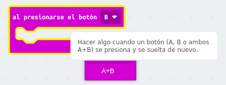
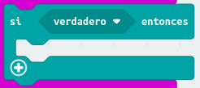
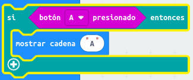
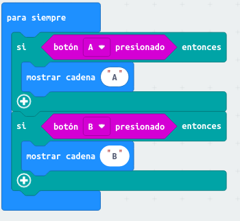

Como hemos visto en el apartado 3.1, la tarjeta micro:bit tiene dos pulsadores (etiquetados como A y B). Podemos ejecutar cualquier instrucción cuando se pulse cada botón de forma independiente o bien a la vez. Para ello, usaremos la siguiente instrucción:

Los pulsadores también se pueden programar como una condición. En este caso, necesitaríamos utilizar la instrucción condicional o si:

Esta instrucción comprueba una condición y si ésta es verdadera, entonces se ejecutará el código interior. Por ejemplo, el siguiente código mostrará el texto "A" cuando se haya presionado el botón A:

Para que el código se ejecute es necesario incluirlo dentro de un bloque como, por ejemplo, para siempre. Veamos el ejemplo completo:

Si pruebas el programa anterior verás que cada vez que pulses el botón "A" se mostrará el texto "A" y si pulsas el botón B se mostrará "B"
Modifica el programa anterior para que cuando se pulse el botón A se muestre un icono y cuando se pulse B se muestre otro icono diferente. Puedes elegir el icono que quieras